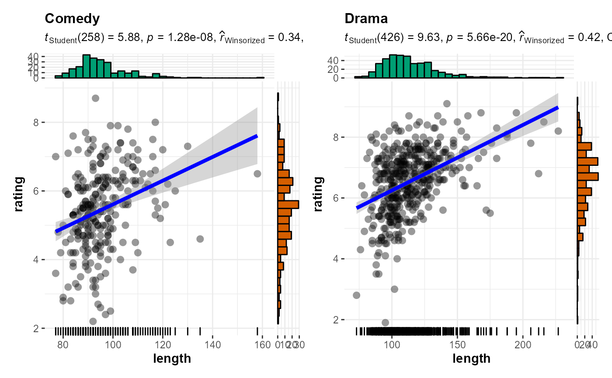
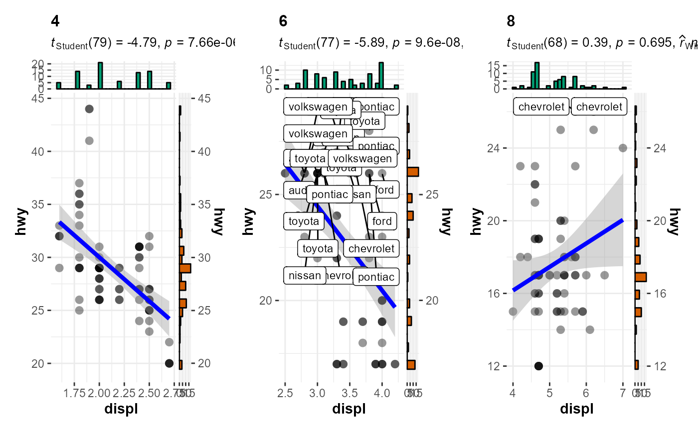

Grouped scatterplots from ggplot2 combined with marginal
histograms/boxplots/density plots with statistical details added as a
subtitle.
grouped_ggscatterstats(
data,
x,
y,
grouping.var,
label.var = NULL,
label.expression = NULL,
title.prefix = NULL,
output = "plot",
...,
plotgrid.args = list(),
title.text = NULL,
title.args = list(size = 16, fontface = "bold"),
caption.text = NULL,
caption.args = list(size = 10),
sub.text = NULL,
sub.args = list(size = 12)
)
Arguments
| data |
A dataframe (or a tibble) from which variables specified are to
be taken. A matrix or tables will not be accepted. |
| x |
The column in data containing the explanatory variable to be
plotted on the x-axis. Can be entered either as a character string (e.g.,
"x") or as a bare expression (e.g, x). |
| y |
The column in data containing the response (outcome) variable to
be plotted on the y-axis. Can be entered either as a character string
(e.g., "y") or as a bare expression (e.g, y). |
| grouping.var |
A single grouping variable (can be entered either as a
bare name x or as a string "x"). |
| label.var |
Variable to use for points labels. Can be entered either as
a character string (e.g., "var1") or as a bare expression (e.g, var1). |
| label.expression |
An expression evaluating to a logical vector that
determines the subset of data points to label. This argument can be entered
either as a character string (e.g., "y < 4 & z < 20") or as a bare
expression (e.g., y < 4 & z < 20). |
| title.prefix |
Character string specifying the prefix text for the fixed
plot title (name of each factor level) (Default: NULL). If NULL, the
variable name entered for grouping.var will be used. |
| output |
If "expression", will return expression with statistical
details, while "dataframe" will return a dataframe containing the
results. |
| ... |
Arguments passed on to ggscatterstats
point.label.argsA list of additional aesthetic arguments to be passed
to ggrepel::geom_label_repel geom used to display the labels. smooth.line.argsA list of additional aesthetic arguments to be passed
to ggplot2::geom_smooth geom used to display the regression line. point.argsA list of additional aesthetic arguments to be passed
to ggplot2::geom_point geom used to display the raw data points. marginalDecides whether ggExtra::ggMarginal() plots will be
displayed; the default is TRUE. point.width.jitterDegree of jitter in x and y
direction, respectively. Defaults to 0 (0%) of the resolution of the
data. Note that the jitter should not be specified in the point.args
because this information will be passed to two different geoms: one
displaying the points and the other displaying the labels for these points. point.height.jitterDegree of jitter in x and y
direction, respectively. Defaults to 0 (0%) of the resolution of the
data. Note that the jitter should not be specified in the point.args
because this information will be passed to two different geoms: one
displaying the points and the other displaying the labels for these points. marginal.typeType of marginal distribution to be plotted on the axes
("histogram", "boxplot", "density", "violin", "densigram"). marginal.sizeInteger describing the relative size of the marginal
plots compared to the main plot. A size of 5 means that the main plot is
5x wider and 5x taller than the marginal plots. xfillCharacter describing color fill for x and y axes
marginal distributions (default: "#009E73" (for x) and "#D55E00" (for
y)). Note that the defaults are colorblind-friendly. yfillCharacter describing color fill for x and y axes
marginal distributions (default: "#009E73" (for x) and "#D55E00" (for
y)). Note that the defaults are colorblind-friendly. typeType of association between paired samples required
(""parametric": Pearson's product moment correlation coefficient" or
""nonparametric": Spearman's rho" or ""robust": percentage bend
correlation coefficient" or ""bayes": Bayes Factor for Pearson's r").
Corresponding abbreviations are also accepted: "p" (for
parametric/pearson), "np" (nonparametric/spearman), "r" (robust),
"bf" (for bayes factor), resp. conf.levelScalar between 0 and 1. If unspecified, the defaults return
95% confidence/credible intervals (0.95). bf.priorA number between 0.5 and 2 (default 0.707), the prior
width to use in calculating Bayes factors. betabending constant (Default: 0.1). For more, see WRS2::pbcor(). kNumber of digits after decimal point (should be an integer)
(Default: k = 2L). formulaFormula to use in smoothing function, eg. y ~ x,
y ~ poly(x, 2), y ~ log(x). NULL by default, in which case
method = NULL implies formula = y ~ x when there are fewer than 1,000
observations and formula = y ~ s(x, bs = "cs") otherwise. methodSmoothing method (function) to use, accepts either
NULL or a character vector, e.g. "lm", "glm", "gam", "loess"
or a function, e.g. MASS::rlm or mgcv::gam, stats::lm, or stats::loess.
"auto" is also accepted for backwards compatibility. It is equivalent to
NULL.For method = NULL the smoothing method is chosen based on the
size of the largest group (across all panels). stats::loess() is
used for less than 1,000 observations; otherwise mgcv::gam() is
used with formula = y ~ s(x, bs = "cs") with method = "REML". Somewhat anecdotally,
loess gives a better appearance, but is \(O(N^{2})\) in memory,
so does not work for larger datasets.If you have fewer than 1,000 observations but want to use the same gam()
model that method = NULL would use, then set
method = "gam", formula = y ~ s(x, bs = "cs"). method.argsList of additional arguments passed on to the modelling
function defined by method. ggthemeA function, ggplot2 theme name. Default value is
ggplot2::theme_bw(). Any of the ggplot2 themes, or themes from
extension packages are allowed (e.g., ggthemes::theme_fivethirtyeight(),
hrbrthemes::theme_ipsum_ps(), etc.). ggstatsplot.layerLogical that decides whether theme_ggstatsplot
theme elements are to be displayed along with the selected ggtheme
(Default: TRUE). theme_ggstatsplot is an opinionated theme layer that
override some aspects of the selected ggtheme. bf.messageLogical that decides whether to display Bayes Factor in
favor of the null hypothesis. This argument is relevant only for
parametric test (Default: TRUE). results.subtitleDecides whether the results of statistical tests are
to be displayed as a subtitle (Default: TRUE). If set to FALSE, only
the plot will be returned. xlabLabels for x and y axis variables. If NULL (default),
variable names for x and y will be used. ylabLabels for x and y axis variables. If NULL (default),
variable names for x and y will be used. subtitleThe text for the plot subtitle. Will work only if
results.subtitle = FALSE. captionThe text for the plot caption. ggplot.componentA ggplot component to be added to the plot prepared
by ggstatsplot. This argument is primarily helpful for grouped_ variant
of the current function. Default is NULL. The argument should be entered
as a function. marginsAlong which margins to show the plots. One of: [both, x, y]. xparamsList of extra parameters to use only for the marginal plot along
the x axis. yparamsList of extra parameters to use only for the marginal plot along
the y axis. |
| plotgrid.args |
A list of additional arguments to cowplot::plot_grid. |
| title.text |
String or plotmath expression to be drawn as title for the
combined plot. |
| title.args |
A list of additional arguments
provided to title, caption and sub, resp. |
| caption.text |
String or plotmath expression to be drawn as the caption
for the combined plot. |
| caption.args |
A list of additional arguments
provided to title, caption and sub, resp. |
| sub.text |
The label with which the combined plot should be annotated.
Can be a plotmath expression. |
| sub.args |
A list of additional arguments
provided to title, caption and sub, resp. |
References
https://indrajeetpatil.github.io/ggstatsplot/articles/web_only/ggscatterstats.html
See also
Examples

